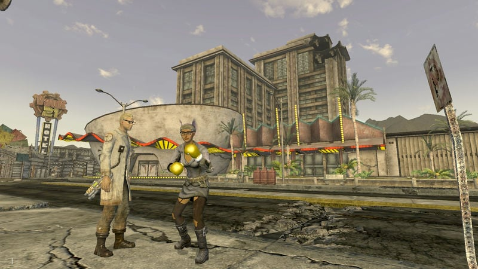

fallout new vegas
logs
17.jan.25 i finished the dead money dlc recently. 1 out of 4 dlcs done! the gameplay was def something let me tell you that! thought at the end of the day i can't really complain a lot because it's really easy to cheese your way through. i really liked the story though. and same for the companions you meet along the way. my favorite is christine of course.... she had a scene where she asks to hold your hand and with the lesbian perk you can promise her that you will come back for her and that honestly left me GAGGED at the other end of the screen like.... okay i will now devote my life to you. i wish i could talk to veronica about christine post dlc.... sigh. my doomed yuri. dean and dog/god were also super interesting but that's all i gotta say about them.
retaking the topic about the gameplay: the 1st half of the dlc was not that bad at all. lots of traps. A LOT. of traps. i found the enemies a bit annoying because you had to blow their heads in order to really kill them but i eventually got the hang of it. they are also a bit scary. the 2nd half of the dlc that takes place inside the casino though... OH BOY!
the quests inside the casino were VERY challenging which is honestly welcome and all of that. but the alarms that made your head explode unless you reach a safe spot or disable them were INSANE considering the fact you also had hologram guards shooting lasers at you!!!! you have no idea how much i died during these sequences. jesus. anyways.elijah is such a fucking dickhead... he's probably homophobic too.
i lowkey let go. because i was only able to carry out 2 gold bars.
20.dec.24 I AM BACK I AM SO BACK! i mostly didn't touch this game at alllll the past few months because i wanted to get the DLCs through a steam sale before finishing the main story. im gonna do them all by release order. so yeah, i've been having a bit of fun with the ghosts and all of that in sierra madre. would love to know why i'm being attacked by ghosts.
04.aug.24 very close to the ending of the main quest (i think!) but i still have a few quests i wanna do... + i wanna explore as much as i can :3 i also would like to get the DLCs before finishing the main storyline but i wanna get em on sale... we'll see about that later on. here are some screenshots:
.jpg)
.jpg)
.jpg)
29.jul.24 obsessed with these boxing gloves. and also my fit.
24.jul.24 there is nothing in my brain except fallout.
nobody is asking but i basically manage my inventory on a dumpster that is in goodsprings. right next to this mojave express dropbox. it is honestly the best spot because i can take stuff from the dropbox AND i have a store right next to it as well in case i want to sell something i don't use. though i am a big hoarder... i got this stupid dinky dinosaur whatever the fuck toy from the novac gift shop and put it on top of the dropbox for decoration.
.jpg)
i know this isn't fallout 4. i know. and yet i still yearn for my own little home decorated to the top with the stupid things i come across... so with that said... i have yet to find a nice place that i could potentially make my home. i'd like something nice and with a campfire so i can cook my stuff. i haven't been fucking around much with the benches much tbh...... haven't found much need for them. i probably have all the stuff to make a couple of things. but yeah i simply don't really need them.
.jpg)
anyways. i made it to new vegas and even inside the strip!! but i haven't done much in those places. i really am enjoying this game so much. i love how lively it feels and the side quests have been very engaging as well. fuck finding whoever the fuck shot me in the head. i need to get this emo poet into the followers of the apocalypse!!!!! which btw i had nooo clue they would be in this game!!! i really liked their ideals when i stumbled across them in fallout 1. so pretty cool to see them here.
.jpg)
been having a lot of fun with the companions too! the loveliest one has been veronica by far... she's very sweet and i love seeing her punching the shit out of things. i also really like her quest with the brotherhood of steel and how it questions the way they are stagnant and how they can change their ways. other companions that have made me giggle have been arcade gannon and cass. every time i'm with arcade all i think about is the meme that says i want your lil autistic ass to be mine 😘. he's also just really funny too.
and while playing this game... i kinda wish i had played fallout 2 first before new vegas since that game is pretty relevant because it's another game that takes place in the west area of the US so like there's a lot of stuff that new vegas references that comes from the first two fallout games. but i just wanted a break from the isometric view and turned based combat. like i LOVED playing through fallout 1 but it was pretty hard to get through. so i thought playing new vegas first would be like a nice refresher before jumping into fallout 2. but i think i would have appreciated the small references more if i had played it first, just like i was able to GET and appreciate the stuff that references fallout 1 in new vegas. i'll get to it at some point. i'm really curious about the enclave stuff from the 2nd game. i also just keep thinking about this clip from fallout 2 that my girlfriend showed me. fucking hilarious.
19.jul.24 asked for my girlfriend for a hint on where to find veronica because i somehow missed her on my first playthrough. and i finally met her!!! shes so sweet i love her.
oh and this also happened. rip boone
17.jul.24 i was wondering where this little robot was after remembering em' from my first playthrough!
.jpg)
also i looked up and thought this was really pretty.
.jpg)
16.jul.24 this was so embarrassing...
i didn't even notice my health and also why is there a DOG behind me? i was so dead here either way...
14.jul.24 been a while since i played this! did a little bit of stuff here and there. turned that robot into a sheriff for primm  also met my first companion (of this playthrough) cass! she's pretty funny.
also met my first companion (of this playthrough) cass! she's pretty funny.
some notes for myself:
- check back on nipton when lockpick leveled up at 50
- go back to primm and talk to the ncr outpost there. tell them about the sick robot who's a sheriff now.
.jpg)
.jpg)
27.may.24 i go north of goodsprings and got my ass beat by cazadores.... i went back and decided to take a selfie with the dog instead.
after i said goodbye to the dog, i went south and helped out the ppl at primm. i will be turning that robot into a sheriff.
24.may.24 i think i am pretty much done with goodsprings! got through that fight with the powder gangers (btw i feel like gangers is impossible for me to say irl) and the ppl of goodsprings. helped goodsprings of course because like i don't have have it in me to be evil. and also a dog lives in goodsprings and her name is cheyenne. i remember in my first playthrough of new vegas, when i got into this fight idk What happened but my ass was a bit rusty and the dog fucking died and i felt soooooo bad. i couldn't even reload because it had been a while since i had saved the game (i learned from this one) so she had to stay dead 
until today! i did this quest again, sniped the guys. and the dog? is very much alive. fuck yes.
one of the first perks i chose in the game was the wild wasteland. i think i have encounter at least 2 of these random encounters.
.jpg)
.jpg)
the first one was this fridge with a skeleton and a hat. but the weird thing is that when i equip the hat it looks totally different on my character? it has feathers?? oh my bad, i just googled this and this is just what it shows for female models KJDFLFDKSJ. moving on.
.jpg)
i also found this thing. and below the clift there was a corpse with a pretty cool outfit tbh. also fuck that bitch barton whatever for making me go and look for his missing daughter and wasting my damn time. i killed you with a knife.
i think next time i boot up the game i will goooooooo to the north of goodsprings and do some progress on my main quest. but anyways, it feels good to be playing this game again :)
22.may.24 told myself i would start a new save file as soon as i finished playing fallout and here we are. we are so back.
.jpg)
my little angel
.jpg)
chilling with oomf
11.apr.24 first played around the same time as fallout aka summer 2020 and probably once again in summer of 2021. i think i am halfway through the game but imma be real. i have 30 hrs in on this game. i kinda don't remember a lot of what's happening when i stopped playing it KFDLDFKFD. so when i pick it up again whenever, i will probably gonna have to do some light reading.
i'm pretty sure i had my fun in the 30 hrs that i played. i do remember the songs from the radio being a bit samey........... i felt like there were not that many songs in there. at least from my memory.
this is my 2nd 3D fallout i've ever played after fallout 4. gun play is def a bit jankier. but like i can't really bitch about that when it does INDEED have a WAYYY better dialogue (+dialogue system) than FO4. the gay ppl were right. very charming and funny game as well. will probably pick it up again after finishing FO1. someday. on god 🙏